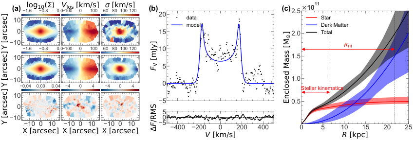
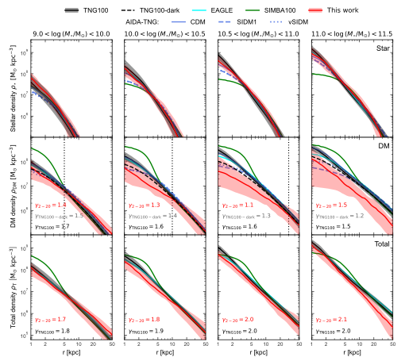
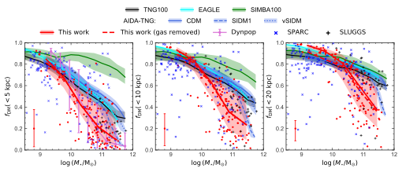
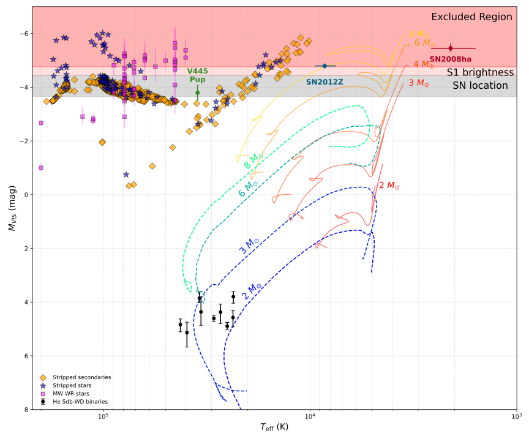
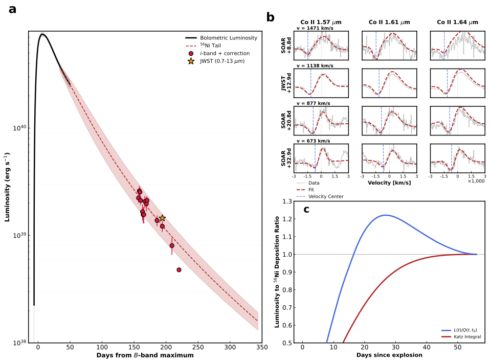

本期为期刊选文：未确认当日HE公告，仅使用具有真实发表日期的近期未读期刊论文，不将旧HE文章标为今日新文。
生成时间：2026-11-27T16:58:56+08:00
当日来源日期论文数：0
内容构成：今日新文 0 篇；补充推荐 2 篇；经典旧文精读 0 篇
阅读分层：重点精读 1 篇；相关简报 1 篇。精读依据科学贡献筛选，简报保留方法、结论及局限。
补充推荐论文数：2
今日结论
本期未确认当日HE新投稿或交叉投稿，独立筛选近期未读期刊研究，共 2 篇通过既定科学门槛与全文核验。各篇保留实际来源日期。
近期未读期刊研究（保留实际发表日期）
1. Lower central dark matter densities in nearby galaxies than predicted by simulations
- 来源：Nature Astronomy
- 链接：https://www.nature.com/articles/s41550-026-03017-y
- 作者：Yu Lei, Ling Zhu, Meng Yang, Giulia Despali, Zheng Zheng, Ran Li, Dandan Xu, Niankun Yu
- 类型：近期未读期刊研究
- 公告 / 来源日期：2026-11-26
- 阅读层级：重点精读
- 评分：novelty 8/10，importance 8/10，relevance 8/10，final 9.00/10
- 推荐理由：136个近邻星系恒星与气体动力学比较中心暗物质密度，质量依赖偏差可实质约束重子反馈与晕结构；需全文检验轨道/质量光度比退化和模拟比较口径。
中文题目：把恒星与中性氢连接起来：136个近邻星系的中心暗物质少于模拟预期
做了什么：作者用136个近邻星系的内部恒星运动和外部中性氢（H I）积分谱，共同重建恒星与暗物质质量分布。恒星数据来自MaNGA和CALIFA积分视场光谱，H I来自既有巡天与FAST观测；两类示踪物覆盖不同半径，帮助区分“恒星比较重”和“暗物质比较多”这两种都能提高运动速度的解释。样本覆盖约$10^9$—$10^{11.5}M_\odot$恒星质量，H I尺度约20—50 kpc。与TNG100、EAGLE、SIMBA及AIDA-TNG比较，较大质量星系的中心暗物质密度和固定物理半径内暗物质比例普遍偏低。
关键不是发现星系没有暗物质，而是其径向分布和模拟不一致：低密度区域随恒星质量增大而扩展；最重质量箱甚至在约50 kpc内都偏低，但这也可能意味着整体晕质量或浓度较低，不能直接断言存在超过50 kpc的平坦核心。本文为11月26日期刊论文，详细核读依据对应公开作者稿arXiv:2609.16740v1，期刊RSS与公开摘要的136星系、质量依赖偏差主线一致；未逐字认证期刊付费正文与作者稿完全相同。
版本差异须保留：期刊公开摘要把约10至大于50 kpc低密度区域对应的恒星质量上端写为10^11太阳质量，而作者稿摘要写为10^11.5太阳质量；本解读的分箱、方法和具体数字均按已核读作者稿说明，不把两版本措辞认证为完全一致。
为什么重要：传统“尖峰—核心”问题经常集中在矮星系：暗物质数值模拟的中心尖峰是否被恒星反馈抹平。本文把检验扩展到恒星质量更高、重子引力收缩预计更强的系统，并在统一方法下连接内外区域，暴露出多套宇宙学流体模拟对中心暗物质的共同高估。这是一份有用的观测基准，不是对冷暗物质的排除：反馈处方、质量光度比和示踪物几何仍参与反演，现有自相互作用模型也未定量解释全部趋势。
理论 / 观测 / 仪器方法价值：方法价值在于用便宜得多的空间未分辨H I谱提供外区约束，同时保留恒星二维运动图对内区形状和质量的限制。作者用三轴轨道叠加模型处理恒星，按经验H I质量—尺度关系与平均面密度剖面建立薄盘模型，共享同一个引力势。应用这条路线需要高信噪双峰H I谱、倾角约束及可接受的气星对齐；它不能把任意积分线宽自动转成无假设的暗物质剖面。
为什么应该关注：对高能天文读者，暗物质密度形状决定间接探测中从粒子参数到预期辐射强度的天体物理换算；本文提醒我们，不宜把流体模拟中受重子收缩增强的中心密度直接视作已被数据确认。作者没有计算伽马射线湮灭因子、给出IACT灵敏度或约束粒子截面，因此可借鉴的是多示踪物联合反演与系统误差处理。值得跟进的是空间分辨H I能否验证推断的大尺度低密度区域，以及反馈和暗物质相互作用能否在同一观测口径下区分。
展开详细解读：文章讲解、背景、理论、重点章节、图表与相关工作
文章详细讲解
科学问题是质量如何在星系中分配。恒星和气体的速度响应总引力，却不直接标记引力来自哪种物质。只有内侧恒星运动时，增加恒星质量光度比并减少暗物质，往往仍能得到类似速度图；只测外侧气体，又容易缺失恒星主导区的信息。研究希望用同一势能模型同时解释两种示踪物，获得跨较大质量范围可比较的暗物质剖面。
作者先以成像和恒星族合成确定恒星光分布及质量光度比的径向变化，再允许整体归一化自由变化，避免硬性指定所有星系具有同一个初始质量函数。暗物质采用球对称广义NFW模型，内坡度也自由；恒星可三轴分布。每一个候选势中叠加4410条恒星轨道拟合光度和运动图，再将理想H I薄盘分环投影、积分、展宽，拟合单碟谱。这种连接同时利用了内侧运动结构和外侧速度范围。
结果以固定5、10、20 kpc半径的暗物质比例及各质量箱密度剖面展示。恒星中心密度从最低到最高质量箱约升1.4 dex，而5 kpc暗物质密度仅升约0.2 dex，因而高质量星系在相同物理孔径内更容易由恒星主导。与模拟相比，偏差随质量和半径变化；并非所有星系都暗物质少，也不是“暗物质比例低”等同于“整个晕很小”。在不少系统中，较外侧密度会追上同质量箱其他星系。
限制来自反演和选样。作者舍弃不对称H I谱、明显不规则恒星运动、近乎正面的系统及气体线宽与共面模型不一致的系统；因此结论适用于该类可建模样本，不能直接推广到并合或强翘曲星系。模拟恢复与质量—尺度匹配缓解了若干偏差，但没有把反馈物理和暗物质粒子性质唯一分离。最有价值的下一步是用分辨H I的空间几何与速度场取代经验盘剖面，再检查偏差是否保持。
关键结果是怎么做出来的
第一步是建立可解释而非单纯数量大的样本。既有资料提供105个信噪比大于10且清楚双峰的系统，FAST补观测贡献69个双峰谱，再加入10个相关项目目标，起始为184个。去掉不对称或恒星运动不规则者剩176个；再排除15个倾角小于35度者，以及25个H I线宽过窄、在气星共面对齐假设下导致非物理解者，得到136个。29个有CALIFA、107个有MaNGA数据。被剔除的25个正是几何模型适用性的重要边界。
第二步把影像转换成质量模型。Pan-STARRS的r波段表面亮度用多高斯展开；在积分视场覆盖内采用恒星族合成给出的质量光度比梯度，外侧按拟合外推处理。归一化参数$\alpha$相对Salpeter初始质量函数自由变化，低质量星系则限制$\alpha<1$，避免把内侧冷气体或模型退化过度归到恒星。不能将这个约束描述成无先验的恒星质量测量。
第三步拟合互补数据。恒星运动图包含平均视向速度和速度弥散；MaNGA弥散扣除仪器展宽，出现负平方差的空间单元被屏蔽。H I谱在给定盘分布、倾角和旋转曲线下前向生成，盘归一化可在基准值上下0.5 dex变化，内禀气体弥散允许5—50 km/s，多数最优值约10 km/s。图2同时展示运动图、积分谱和质量分解，解释外侧H I如何收紧暗物质约束。
第四步以统一孔径比较。图4按恒星质量分箱，使用同样球壳密度定义比较观测与模拟；图5用5、10、20 kpc的累计暗物质比例，减少不同有效半径造成的口径偏差。作者稿报告，恒星质量大于$10^{10.5}M_\odot$的系统中约90%在20 kpc内的暗物质比例低于冷暗物质模拟中位值，约84%低于对应第16百分位界线。这些是样本分布比较，不是90%或84%的“发现概率”。
第五步检查方法是否自己制造缺口。58个TNG50模拟星系被制成与真实数据相近的图像、运动图和积分谱，再走同一反演。恢复整体中位趋势优于单个系统，典型5—20 kpc暗物质比例系统偏差按观测方向可达约10%或20%；未显式建模气体还会在外区带来小幅高估。另将模拟样本按恒星质量和尺度匹配，低密度偏差仍存在。模拟检验支持结果，但不等于所有真实气体几何、恒星族误差均被覆盖。
最后区分误差和物理解释。个体5 kpc内暗物质比例相对误差可能超过50%，恒星质量20%的不确定可允许某些极低密度解的暗物质提高数倍。自相互作用SIDM1在高质量端朝观测方向移动，但中位核心尺度仍不够；速度依赖vSIDM也未普遍解决问题。AGN反馈引发重子流失和晕膨胀是一条可能解释，作者未把它拟合成唯一机制。
展开背景、理论、公式、模型和章节导读
背景知识
星系的可见光主要告诉我们恒星在哪里，旋转和随机运动则告诉我们引力有多强。一个旋转快的星系可以含有更重的恒星族，也可以含有更多不发光物质。所谓暗物质动力学测量并非把两张图直接相减，而是在平衡、几何和轨道模型下寻找同时满足观测的质量分解。
冷暗物质的纯引力模拟通常产生中心渐增的密度剖面。真实星系形成时，气体冷却沉降会加深中心势阱，可能使暗物质轨道收缩；恒星或活动星系核反馈又可能移走气体、使势随时间变化，从而重新分配暗物质。因此同一种粒子模型下，不同重子处方也能得到不同中心剖面；研究比较的是完整星系形成模型的预言。
积分视场光谱把一个星系划成许多空间单元，各自测量恒星吸收线的平均速度和弥散，能识别旋转、三轴性和轨道结构。然而覆盖往往只有约一至两个有效半径，主要采样恒星密集区。H I的21厘米辐射通常延伸更远，但单碟积分谱把整个盘叠在一起，丢失了每个速度对应的空间位置。这解释了为何两者互补，以及为何仍需盘形状假设。
比较暗物质比例时孔径非常重要。$f_{\rm DM}(<R_e)$取决于物理质量分布，也取决于有效半径$R_e$；同恒星质量下更大的盘，在三倍有效半径内自然能包进更多暗物质。本文同时报告固定kpc和按有效半径缩放的结果，使“形态差异”与“量了不同大小的区域”不被混为一谈。
基础理论 / 方法脉络
前向动力学的起点是共同引力势：恒星和H I虽然分布、运动方式不同，却受同一质量分布约束。恒星并非全部沿圆轨道，故作者用轨道叠加，在给定势下对许多轨道赋非负权重，再投影到观测平面。权重允许系统同时具有有序旋转和随机运动，避免用单一旋转速度概括恒星运动图。
恒星质量模型的关键是“梯度”和“总归一化”分开。不同半径恒星年龄、金属丰度等变化会改变每单位光的质量；作者先拟合这种相对梯度，再用$\alpha$整体缩放，以吸收初始质量函数差异。若强制质量光度比处处相同，中心的高值可能被错误外推，抬高外区恒星质量并压低暗物质分量。
暗物质gNFW模型允许中心坡度$\gamma$改变，因此既能表达尖峰，也能逼近平核。自由参数改用20 kpc内暗物质质量，因它比远超数据范围的总晕质量更直接受观测约束。模型的自由并不无限：球形暗晕、恒星三轴形状和有限参数剖面仍限制可表达的真实结构，中心极低值尤其受恒星质量退化影响。
积分H I谱的双峰来自倾斜旋转盘中大量物质投影到接近最大正负速度处，但峰位、峰高和中间填充也受气体径向分布、倾角及速度弥散控制。作者用168个已有分辨星系的平均面密度形状及H I质量—尺度关系设置盘，之后允许归一化和弥散调整。此处外半径是经验推断，不是每个目标都获得了空间分辨H I图；共同模型的检验必须与这个事实一起阅读。
公式与推导
以下按“影像—势—运动—统计—质量比例”连接原文方程与教学关系。前两式为原文式(1)—(3)的紧凑写法。把表面亮度表示为多个投影高斯：
$L_i$为各高斯总光度，$\sigma_i$为投影长度，$q_i$为轴比，因此$I_*$具有光度/面积单位。它提供可去投影的几何基底，而不是暗物质测量本身。恒星族合成确定各基底的相对质量光度比$\widetilde\Upsilon_i$，再引入动力学归一化：
$\alpha$无量纲，改变它会同时改变恒星引力与剩余暗物质需求。去投影还依赖三轴形状参数，不能仅从此式唯一恢复三维质量。
原文式(4)采用广义NFW：
$\rho_0$为质量密度，$R_s$为长度；$r\ll R_s$时近似$r^{-\gamma}$，而外侧趋向$r^{-3}$。下式为球对称暗晕的标准积分关系，说明为什么作者可用$M_{\rm DM,20}$替代$\rho_0$采样：
积分有质量单位；只要$R_s$和$\gamma$给定，20 kpc内质量便确定密度归一化。它不会自动确定数据之外的晕质量。
为解释气体前向模型，下面是标准动力学和投影关系，并非作者另报的拟合公式：
$\Phi$为单位质量势，$i$为倾角，$\varphi$为盘内方位角；前式适用于盘面圆运动，比把整个非球形系统强行写成$GM(<R)/R$更准确。后式说明近正面盘的速度对倾角误差极敏感。作者原文式(7)以归一化半径$x=r/R_{\rm HI}$指定气体面密度：
0.19和0.18是无量纲尺度，$\Sigma_0$有面密度单位。将各环按上式投影、由气体弥散展宽并在波束内累加，即得到待拟合谱$\Psi_{\rm pred}$。
原文式(8)—(9)将两类数据的残差相加：
RMS由无信号谱段估计，分子分母均为流量平方。原文式(10)的可接受模型区域采用模拟校准与谱扰动共同给出的阈值：
$N_{\rm obs}=2N_{\rm kin}$包含速度和弥散观测数，气体项取固定势中100次谱扰动所得$\chi^2$的标准差。这里的“一倍标准差”约束经模拟覆盖率校准，不能套用六参数常规似然阈值而声称完全等价。
最后把各可接受质量模型转成累计比例；下式是本文采用的定义：
气体未显式进入原始势拟合，作者另扣估计H I贡献检验变化；因此“总质量减恒星”并不天然全是暗物质。原文式(11)用两个孔径的累计质量定义有限区间有效坡度：
这是从幂律$M(<r)\propto r^{3-\gamma}$得到的平均诊断，不等于gNFW在$r\to0$的渐近坡度，也不应与总密度的2—20 kpc坡度混用。
模型拟合 / 应用方法
实际输入包括r波段影像、二维恒星速度和弥散图，以及H I积分谱。光分布与相对质量光度比梯度预先拟合；中心黑洞因影响半径未分辨，质量由黑洞质量—速度弥散关系固定，软化尺度为$10^{-3}$ pc，对本文kpc尺度结果影响很小。这里没有把黑洞质量当作新的观测结果。
势的六个搜索参数是$\alpha,p,q,M_{\rm DM,20},R_s,\gamma$，分别控制恒星归一化、内禀形状及暗晕。每个势内拟合恒星轨道权重，并处理H I谱归一化和速度弥散；气体半径及归一化形状来自经验关系。研究用迭代网格搜索寻找低$\chi^2$区域，扩展数据图8展示网格；它不是给出完整贝叶斯后验的MCMC研究，不宜把网格模型离散度改写成贝叶斯可信区间。
误差区域结合恒星统计项的经验缩放和100次气体谱扰动，作者以模拟中真值约68%—70%的覆盖率校准“一倍标准差”定义。对区域内模型逐个计算密度和暗物质比例，最优模型为中心估计，模型散布为误差。群体图中的阴影又常表示星系之间的16—84百分位分布，不能与单颗星系的参数误差或平均值误差互换。
拟合诊断应同时看图2的二维残差和谱残差：只拟合峰宽可能掩盖盘分布错误，只拟合恒星则容易留下外晕不确定。论文的58个模拟恢复覆盖三轴暗晕、类似噪声和选样，但未模拟完整恒星光谱再重新抽取运动，而是直接生成运动图。因此它主要验证动力学反演，不能一并验证真实光谱模板、仪器响应和恒星族合成的所有误差。
气体重力和样本选择是应用中的额外边界。分子气体通常更接近恒星分布，可能推高$\alpha$；较远H I和周星系介质可能被归入暗物质，造成外区高估。作者对H I进行事后扣除，但缺少直接约束的温热周星系气体仍难量化。质量和尺度匹配模拟排除了一个重要替代解释，却未证明剔除不共面气体系统后的样本完全无选择偏差；分辨H I是检验这些条件的直接途径。
重点章节 / 结果段落怎么读
-
主文1.1与Methods 1：先追踪184到136的筛选过程，以及内侧恒星与外侧H I各自测了什么。特别检查25个窄线系统被去掉的原因，它决定模型适用范围。
-
Methods 2—3与图2：按质量光度比梯度、自由归一化、gNFW势、轨道权重、积分气体谱的顺序读。将每项观测对应到它主要约束的参数，才能理解联合数据为何减弱退化。
-
主文1.2—1.4与图4—5：先在同一质量箱比较恒星密度，再比较暗物质；随后固定5、10、20 kpc孔径，区分径向变化和质量依赖。图中百分位区间不是差异显著性。
-
Methods 5—6与扩展数据图4：核对58个模拟恢复、气体扣除、质量—尺度匹配及低于模拟下界的样本比例，判断哪些系统偏差已被检验、哪些仍依赖理想盘假设。
-
主文1.5和Additional information：最后再看SIDM与AGN反馈解释，注意50 kpc内整体偏低与平核尺寸的歧义，以及累计质量坡度与局部内坡度的区别。
关键图表与解读
图2

图注：作者稿图2：MaNGA星系10222-12701的动力学建模。a从左至右为恒星表面亮度、视向平均速度和速度弥散，纵向依次是观测、模型及按误差归一化的残差；图上位置单位为角秒，速度单位为km/s。b上方黑点为H I积分谱、蓝线为模型，横轴速度km/s、纵轴流量mJy，下方为除以谱噪声RMS的残差。c以kpc为横轴显示累计质量，黑、红、蓝分别为总质量、恒星和暗物质，阴影为各分量1σ不确定性；虚线标记恒星运动覆盖和由H I质量—尺度关系推断的H I半径。
怎么看这张图：先检查a、b残差，再看c中恒星约束主要位于内侧、H I延伸到更大半径。蓝色暗物质质量带的外区约束来自联合模型；H I半径由经验关系推断，并非此目标已经取得分辨H I地图。 连接两种示踪物与质量分解，展示实际拟合及残差
来源与置信度：arXiv HTML；source verified；https://arxiv.org/html/2609.16740v1/case_galaxy.png
图4

图注：作者稿图4：观测与模拟的密度剖面比较。四列依次为log10恒星质量/太阳质量在9—10、10—10.5、10.5—11和11—11.5范围；横轴半径为kpc，三行分别为恒星、暗物质和总质量密度，单位为太阳质量/kpc³。红线及阴影表示本样本中位值与1σ散布；黑、青、绿对应TNG100、EAGLE和SIMBA，蓝色的实、虚、点线为AIDA-TNG的CDM、SIDM1和vSIDM。暗物质行另有TNG100-dark黑虚线；竖虚线粗示观测暗物质密度追上模拟的位置。底行标注本工作及TNG100的总密度平均坡度。
怎么看这张图：从上行恒星分布近似一致，再移至中行看高质量箱红线系统偏低，才能区分偏差并非仅来自恒星尺度不匹配。右端质量箱在探测范围内尚未追上模拟，不能单凭这张图把50 kpc低密度范围等同于恒密核心；整体晕质量/浓度差异仍可参与解释。 核心观测—模拟密度差异及其质量、半径依赖
来源与置信度：arXiv HTML；source verified；https://arxiv.org/html/2609.16740v1/dm_star_density_r_reply.svg
图5

图注：作者稿图5：5、10和20 kpc内暗物质比例随总恒星质量变化，三面板从左至右依次增大孔径。横轴是log10恒星质量/太阳质量，纵轴是该半径内累计暗物质与总质量之比。红点为本研究单个星系，左下红误差棒代表单体测量误差的中位值；红实线和阴影为样本中位趋势与1σ散布，红虚线为扣除估计气体贡献后趋势。紫线是DynPop，蓝叉是SPARC，加号是SLUGGS。黑、青、绿及蓝线为各模拟的中位值及散布；AIDA-TNG的实、虚、点线依次对应CDM、SIDM1、vSIDM。
怎么看这张图：沿同一质量向右看，部分偏差在较大孔径减弱；沿每个面板向高质量端看，观测总体偏低更明显。阴影是群体散布，单个星系误差另示；不能将落在模拟第16百分位以下的比例解释成统计发现置信度。 固定物理孔径下量化与其他样本和模拟的比较
来源与置信度：arXiv HTML；source verified；https://arxiv.org/html/2609.16740v1/dm_fraction_kpc_remove_gas.svg
强相关工作
本文引用Lei、Yang与Zhu的2026年方法验证论文《Uncovering the dark matter distribution by combining stellar kinematics and integrated H I spectra: Method validation》（A&A 712, A138）作为58个TNG50模拟测试的来源；这里的新增内容是把该方法用于136个真实星系，并统一比较多套宇宙学模拟。Yang等2020年的NGC 2974联合恒星与冷气体建模，以及2024年讨论低暗物质离群系统的工作，则代表有空间分辨气体约束的前作。本文用积分谱扩大样本，换来的代价是更强的H I空间形状假设。本次通过作者稿参考文献核验这些关系，没有宣称重新阅读全文全部前作。
SPARC主要依靠分辨气体旋转曲线，SLUGGS在大质量早型星系使用球状星团，DynPop则以大量MaNGA恒星运动图进行Jeans建模。它们提供不同半径和形态范围的交叉检验，但恒星初始质量函数、质量光度比梯度、轨道处理及外晕先验不同，不能只看散点重叠就宣称完全一致。本文的优点是同一数据组合和同一反演口径；其与这些样本的差别恰好揭示内外示踪物连接的重要性。原文参考文献还列出Schwarzschild（1979）轨道叠加基础与Wang等（2016）的H I质量—尺度关系，分别承担恒星动力学和积分气体谱空间约束的基础角色。
同一事件 / 同类源线索：
相似工作：
基础理论 / 方法工作：
相反观点 / 张力线索：
（未提供）
2. A faint progenitor system for the faint Iax supernova 2024vjm
- 来源：Nature Astronomy
- 链接：https://www.nature.com/articles/s41550-026-03024-z
- 作者：Erez A. Zimmerman, Avishay Gal-Yam, Paul J. Groot, Eran O. Ofek, Jan van Roestel, Andrea Pastorello, Stefano Valenti, Aravind P. Ravi
- 类型：近期未读期刊研究
- 公告 / 来源日期：2026-11-26
- 阅读层级：相关简报
- 评分：novelty 8/10，importance 8/10，relevance 7/10，final 8.65/10
- 推荐理由：爆炸前Euclid影像约束极暗Iax前身系统，并将低速喷出物与慢衰减联系，直接前身证据有价值；需核查源关联、探测限及爆炸模型退化。
中文题目：SN 2024vjm：爆前亮度上限与慢速喷出物约束极暗Iax超新星
问题、方法与结论：SN 2024vjm是一次极暗Iax超新星。作者将地面多曝光定位投到爆前Euclid图像：爆炸位置没有独立点源，邻近延展源S1的光却会污染测量，因此VIS约26.6等是前身亮度的保守上限，不能称为发现前身。它排除了多种明亮伴星方案，但未唯一识别低质量伴星或双白矮星。爆后多波段光变、低速Co II谱线及约194天JWST红外光谱共同支持镍56衰变供能：公开作者稿给出约0.0037太阳质量镍和约70—83天伽马逃逸尺度，说明低速喷出物可以使暗爆炸缓慢变淡。
意义与贡献：本研究把爆前系统限制与爆后能量收支连接起来，显示明亮Iax的伴星模板未必适用于极暗端。低产能与高沉积效率可以并存；但暗端亮度—衰减反趋势的作者稿统计仅为相关系数−0.81、p=0.052，约2σ，仍需更多事件检验。
可借鉴之处：可借鉴的是联合定位、混叠控制和时间加权能量积分：先将污染光当作保守上限，再用Katz积分消去镍质量归一化，并与尾部和谱线速度比较。方法需要可靠爆炸时刻、宽波段总光度与代表性谱线，不能以单一光学波段替代能量预算。
局限与关注点：对高能辐射研究，价值在于柱密度如何控制衰变伽马射线沉积，本文没有直接探测高能伽马信号。束缚残骸尚未直接检出；约209天后固定i带光度修正失效，额外红外能源仍待测。解读依据公开arXiv:2602.09096v2；11月26日期刊摘要主线相符，但正式全文未核读，作者版若干公式排版问题另存审查，不外推为期刊错误。
图2：前身系统亮度约束

图注：横轴为有效温度（K，向右降低），纵轴为Euclid VIS绝对星等，越上越亮。黄红曲线为富氢恒星轨迹，绿蓝曲线为剥离氦星轨迹；蓝星与橙菱形分别标出大质量剥离主星及伴星的末态，粉方块为银河系WR星，黑点为亚矮星—白矮星双星。红、灰横带分别表示S1与超新星位置的亮度范围；位置处测光受S1污染，因此仅限制前身亮度上限。图中同时标出SN 2012Z、SN 2008ha及V445 Pup的比较位置，误差棒为1σ。
怎么看这张图：先看灰带与允许的更暗区域：低光度双星远低于阈值，仅表示未被排除，不能认定为前身。V445 Pup点靠近灰带，不能把主文的笼统比较扩写为该对象已被确定排除。 直接展示未检出对应的前身限制与仍允许的双星通道。
来源与置信度：arXiv HTML；source verified；https://arxiv.org/html/2602.09096v2/Progenitor_limits.svg
图3：放射性供能与慢速喷出物

图注：a面板给出B至近红外积分光度（黑线与灰色1σ带）及镍56衰变供能模型（红线）；红点是经固定总光度修正的晚期i带测量，黄星为约194天JWST的0.7—13微米积分光度。b面板依次比较1.57、1.61、1.64微米Co II谱线：灰色为数据、红色为拟合、蓝竖线标出吸收速度，四历元从约1471降至673 km/s。c面板的蓝线为瞬时光度与沉积之比，红线为时间加权Katz积分之比，两者晚期趋近1。
怎么看这张图：低Co速度与较长沉积时间相容，支持弱爆炸物质缓慢扩展的解释。光球速度下降不是同一物质减速；固定i带修正后来会失效，模型一致也不是额外能源的零误差排除。 把谱线速度、光度和能量守恒三条证据联系起来。
来源与置信度：arXiv HTML；source verified；https://arxiv.org/html/2602.09096v2/thermonuclear_figure.svg